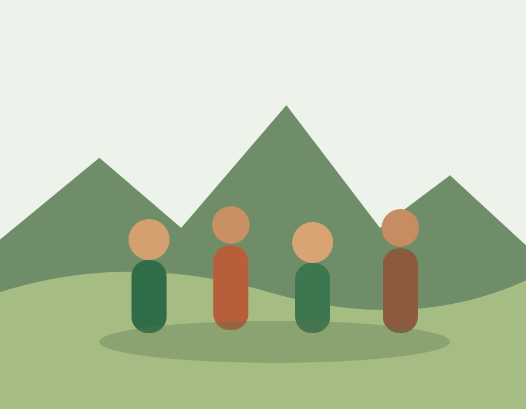
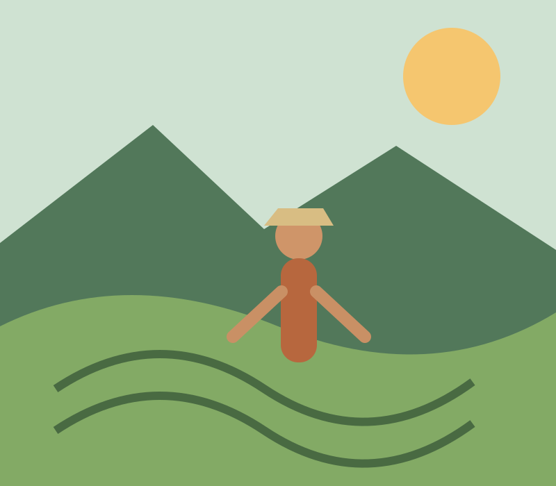
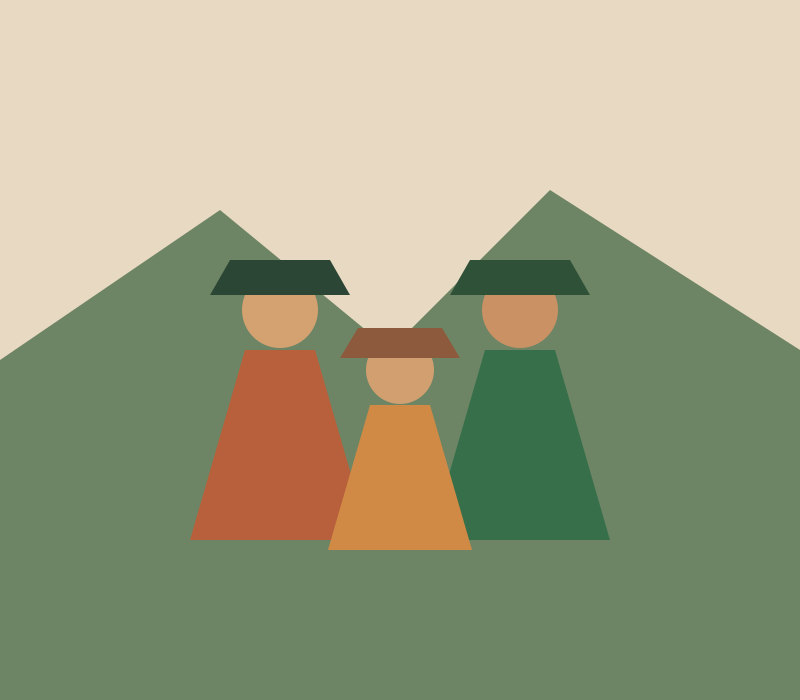
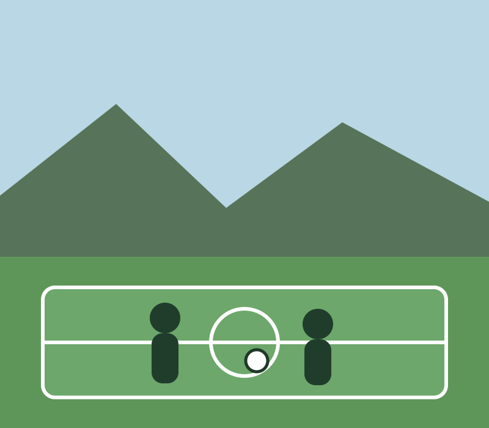
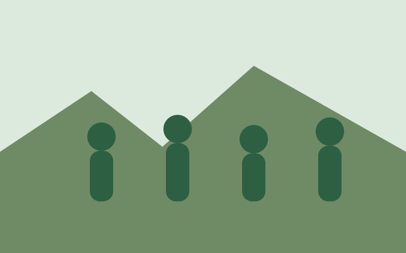
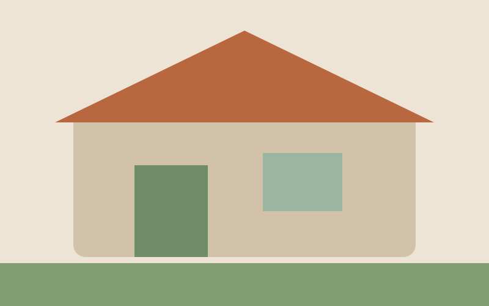
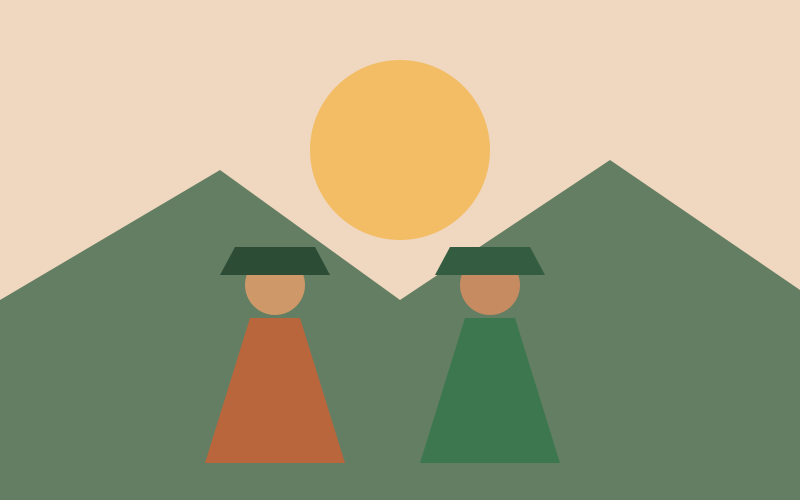

Inicio del proceso de conformación territorial.
Comunidad rural de Cangahua
La Buena Esperanza
de Guachalá
Una comunidad construida con memoria, trabajo colectivo e identidad.
Nuestra comunidad
Bienvenidos a La Buena Esperanza
La Buena Esperanza de Guachalá es una comunidad rural ubicada en la parroquia Cangahua, cantón Cayambe. Su historia está marcada por la lucha por la tierra, la organización comunitaria y el esfuerzo de varias generaciones por construir un territorio propio.
Primera Asamblea General comunitaria.
Parroquia rural perteneciente al cantón Cayambe.
Memoria, identidad y organización colectiva.

Nuestra historia
Una historia construida con esfuerzo
Desde finales de la década de 1950, familias vinculadas con las antiguas haciendas de Guachalá y Pitaná comenzaron procesos de organización para acceder a tierra, vivienda y mejores condiciones de vida.
La primera Asamblea General fortaleció una estructura basada en la participación, la cooperación y la toma colectiva de decisiones. Esa memoria continúa siendo parte esencial de la identidad comunitaria.
Conoce más sobre nuestra historia →Identidad comunitaria
Lo que nos identifica
Minga
Trabajo colectivo para construir, mantener y mejorar los espacios de la comunidad.
Memoria
Historias y conocimientos transmitidos por las generaciones que construyeron el territorio.
Unidad
Participación, solidaridad y cooperación para responder a desafíos comunes.
Territorio vivo
Conoce nuestra comunidad

Producción local
Agricultura, huertos, crianza de animales y experiencias de comercialización comunitaria.
Ver producción →
Cultura e identidad
Memoria Kayambi, saberes comunitarios, celebraciones y tradiciones del territorio.
Conocer la cultura →
Deporte
Encuentros deportivos que fortalecen la convivencia entre generaciones y comunidades.
Ver actividades →Actualidad
Proyectos y noticias

Comunidad
Minga comunitaria por nuestros espacios comunes
Vecinos y vecinas se organizan para mantener y mejorar los espacios compartidos.

Proyectos
Mejoramiento de infraestructura comunitaria
La planificación participativa permite priorizar necesidades y organizar nuevas etapas.

Cultura
Memoria, tradición e identidad comunitaria
Las actividades culturales fortalecen el encuentro entre generaciones y la memoria local.
Participación comunitaria
Una comunidad que sigue construyendo su futuro
Conoce nuestros proyectos, actividades, convocatorias, mingas y noticias.